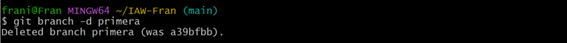
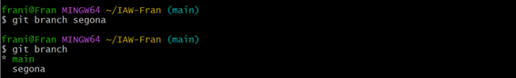

Pràctica branques i unions
Crea una branca que s’anomene primera al teu repositori local, i executa la instrucció necessària per comprovar que s’ha creat.

Crea un nou fitxer en aquesta branca i fusiona’l amb la principal. S’ha produït un conflicte? Raona la resposta.

No hi ha cap conflicte ja que sols ha hi hagut modificacions en varios llocs alhora
Esborra la primera branca

Crea una branca que s’anomene segona, i modifica un fitxer per produir un conflicte en unir-lo a la branca principal. Lliura el fitxer on s’ha produït el conflicte.



*Soluciona el conflicte que has creat al punt anterior i sincronitza la branca segona al remot. *
No ha hi hagut cap conflicte.